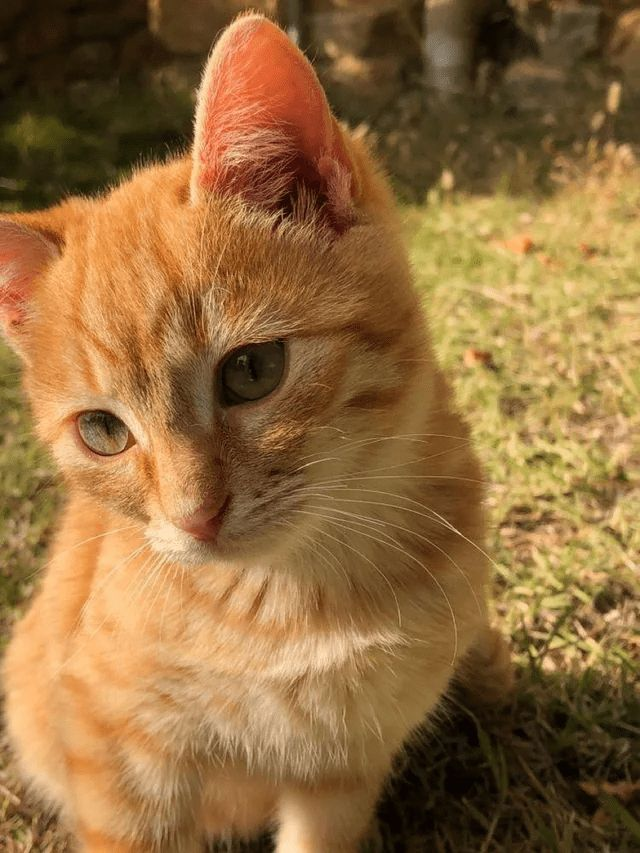

Sobre os Gatos
Os gatos são animais incríveis! Eles são ágeis, curiosos e extremamente amorosos. Aqui celebramos a fofura e as peculiaridades dos nossos amigos felinos.
Galeria de Fotos

Vídeo: Gatos em Ação
Curiosidades sobre Gatos
- Os gatos conseguem girar as orelhas em até 180 graus.
- Ronronar não é apenas felicidade; também pode ser um mecanismo de autocura.
- Os bigodes dos gatos ajudam a medir espaços e detectar mudanças no ambiente.